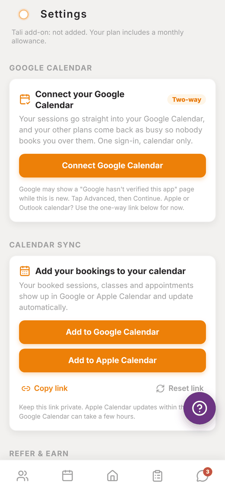
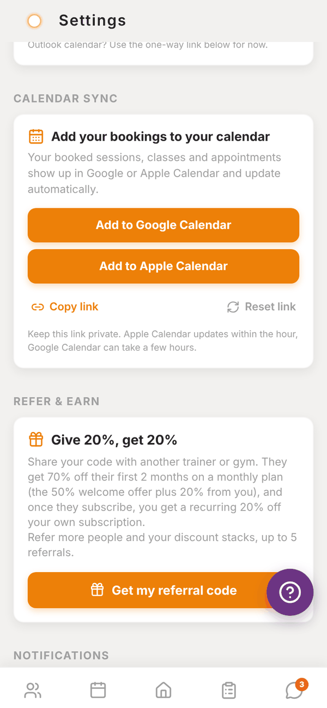

Totality for trainers
Calendar sync
Connect Google Calendar both ways, or add a one-way link to Google or Apple Calendar.
There are two ways to get your Totality bookings into your calendar. Both are in Settings.

Google Calendar, two-way#
This sends your PT sessions into your Google Calendar as they're booked, moved or cancelled. It also reads when you're busy in Google, so those times show as busy when you book in Totality. Totality only sees busy or free, never what your other events are.
- Go to Settings > Google Calendar.
- Tap Connect Google Calendar.
- Sign in with Google and allow calendar access. Tick the calendar box Google asks about.
- Come back to Totality. You see "Connected. Your sessions are going into Google Calendar now, and your busy times will show in the booking picker."
Google may show a "Google hasn't verified this app" page while this is new. Tap Advanced, then Continue.
Once connected you can Reconnect Google or Disconnect. Disconnecting stops new sessions going in and busy times showing. Sessions already in your calendar stay there.
Calendar sync, one-way#
A private link that Google Calendar or Apple Calendar subscribes to. It shows your booked sessions, classes and appointments, and keeps them up to date. Use this for Apple or Outlook, or if you'd rather not connect Google.
- Add to Google Calendar or Add to Apple Calendar adds it in one tap.
- Copy link (Share link on a phone) gives you the link to paste into any calendar app under "Subscribe" or "Add calendar from URL".
- Reset link makes a new link. Any calendar using the old one stops updating, so you'll need to add it again.
Keep the link private. Apple Calendar updates within the hour. Google Calendar can take a few hours.

Questions#
Do I need both?
No. Use Google Calendar two-way if you use Google. Use the one-way link for Apple or Outlook.
A session I cancelled is still in my calendar.
With Google two-way it's removed straight away. With the one-way link, wait for your calendar to refresh (up to a few hours on Google).
Can my clients see my calendar?
No. Totality only reads busy or free, and only for your own bookings.
It says "That link timed out."
The Google sign-in took too long. Tap Connect Google Calendar and try again.